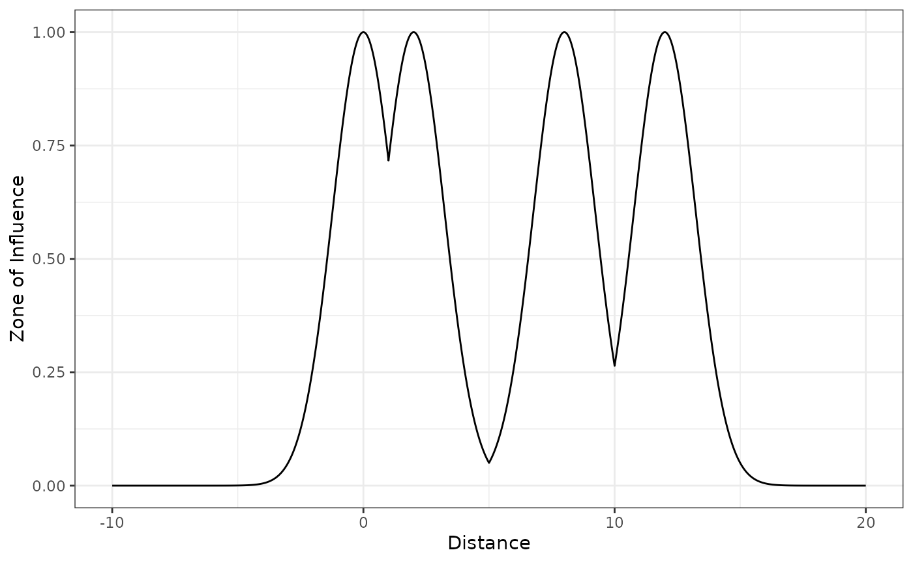
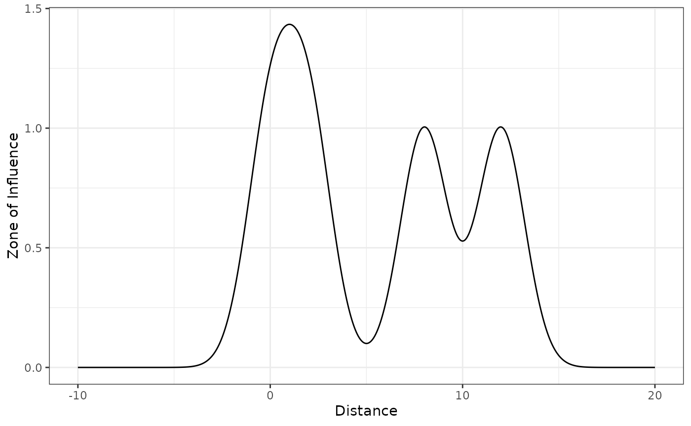

Getting started with the oneimpact package in R
Source:vignettes/getting_started_oneimpact_R.Rmd
getting_started_oneimpact_R.RmdIntroduction
Anthropogenic disturbance often takes place in landscapes already affected by Infrastructure development and land use change, leading to cumulative impacts on biodiversity. Typically, the impact of a given type of infrastructure is determined by computing the distance to the nearest feature only, ignoring potential cumulative impacts of multiple features, which can lead to severe underestimations. The oneimpact package is a collection of tools and functions intended to aid the estimation of cumulative impacts in ecological studies and environmental impact assessments. In version 0.1.0, its main functions are related to the calculation of zone of influence (ZoI) metrics based both on the nearest influence only and the cumulative influence of multiple features of a given type of infrastructure. By calculating the ZoI of the nearest feature and the cumulative ZoI of multiple features using different ZoI shapes and radii, it is possible to use these different metrics as covariates in ecological models and evaluate how strongly different infrastructure types affect ecological processes, how their impact spreads in space, how far they reach, and if the impact of multiple features accumulate. The approach is described in details in Niebuhr et al. (submitted) and exemplified in this document.
The discussion around the impacts of anthropogenic disturbance and their zone of influence is closely linked to the studies on habitat amount and fragmentation and the scale of effect of spatial variables on species-habitat relationships, widely explored in the landscape ecology literature (e.g. Miguet et al., 2016; Huais, 2018). For all practical purposes, estimating the ZoI of anthropogenic disturbances is similar to estimating their scale of effect while also taking into account the shape of their influence (i.e. how they are spatially weighted; Miguet et al., 2017).
Here we give an overview of the functions in oneimpact, define and illustrate the zone of influence functions, show how to use the main package functions, and provide an example of how to use this approach to annotate data for statistical analysis.
To install the oneimpact package, it is possible to use the devtools::install_github() function:
Once installed, we now load the oneimpact package and other packages used in this vignette.
Overview of the package
The oneimpact package has two main functions to calculate zones of influence, the functions calc_zoi_nearest() and calc_zoi_cumulative(). Alternatively the function calc_zoi() can calculate both ZoI metrics in the same run. These functions’ main arguments are the type, which defines the shape of the spatial decay of the ZoI, and zoi_radius, which defines how far the influence expands in space (or how fast it decreases with distance).
Both functions can be run in R environment (R Core Team, 2021) and in GRASS GIS environment (GRASS Development Team, 2017). This is defined by the parameter where. On the one hand, computations in R are generally fast and easy-to-use, since they make use of the optimized functions from the terra package (Hijmans, 2022). However, computations might become slow for large maps. On the other hand, in GRASS GIS, it is possible to compute the ZoI for very large maps using the software’s compiled tools, and given that GRASS GIS does not store maps in the computer’s memory. In GRASS GIS, the calculation of the ZoI requires an active connection between the R session and a GRASS GIS location and mapset (through the package rgrass7; Bivand, 2022), and that the input maps are already loaded within this GRASS GIS mapset. Furthermore, in GRASS GIS the function returns only the name of the output map. This map is stored in the the GRASS GIS location/mapset, and might be retrieved to R through the rgrass::read_RAST() function or exported outside GRASS using the r.out.gdal module, for instance.
The ZoI of the nearest feature (the output of calc_zoi_nearest()) is based on transformations of the map of distance to the nearest feature. First, this map is computed through the terra::distance() function in R or the r.grow.distance module in GRASS. Then, ZoI functions are applied to transform these maps into zones of influence. The zone of influence functions implemented in oneimpact are shown in Table 1 and might be explored with the command help(zoi_functions). They might also be plotted in 1 dimensional space with the plot_zoi1d() function, for illustration of their behavior.
Table 1: Main functions in oneimpact used to calculate zones of influence. They are divided in three types: zone of influence functions (“ZoI functions”), functions to compute the ZoI for raster maps (“Compute ZoI”), and functions to create filters or weight matrices for use in the computation of the cumulative ZoI (“Create filters”).
| Type of function | Function | Description |
|---|---|---|
| ZoI functions |
threshold_decay() step_decay() linear_decay() bartlett_decay() tent_decay() exp_decay() gaussian_decay() half_norm_decay()
|
These functions compute Zone of Influence (ZoI) decay values. The functions with different shapes represent multiple ways the ZoI of an infrastructure or disturbance might affect a given process in space, and the ZoI radius (parameter zoi_radius) controls how far this effect reaches. The rate of decay of the different ZoI functions is parameterized based on the ZoI radius – e.g the slope of linear_decay() is defined so that the function decreases to zero at the ZoI radius. These functions can be used to transform arrays of (Euclidean) distance values (in one dimension) or rasters of (Euclidean) distance (in two dimensions) into values of a zone of influence. The distance might represent the distance to anthropogenic infrastructure, sources of disturbance, or more broadly any type of land use class or spatial variable. |
| ZoI functions | plot_zoi1d() |
This function plots the zone of influence functions in 1 dimensional space, for illustration purposes. When there is more than one value for points (the location of infrastructure or sources of disturbance), either the ZoI of the nearest feature or the cumulative ZoI can be plotted. The ZoI of the nearest feature corresponds to the maximum ZoI value from all infrastructure at each position. The cumulative ZoI corresponds to the sum of the ZoI of all infrastructure at each position. |
| Compute ZoI | calc_zoi_nearest() |
This function takes in a raster with locations or counts of infrastructure features and calculates a raster representing the zone of influence from the neareast feature of that type of infrastructure. Zones of influence are defined by functions that decay with the distance from each infrastructure and their rate of decay is controlled by the ZoI radius (parameter zoi_radius), which defines how far the influence of an infrastructure feature goes. By default, the Gaussian decay ZoI is calculated, but other decay functions might be used (parameter type). The calc_zoi_nearest() function might also return the Euclidean distance to the nearest feature or a transformation from it (e.g. log- and sqrt-distance from the nearest feature). |
| Compute ZoI | calc_zoi_cumulative() |
This function takes in a raster with locations or counts of infrastructure features and calculates a raster representing the cumulative zone of influence or the density of features in space. The process is done through a moving window/neighborhood analysis. The ZoI or weight matrix is defined from zone of influence functions, which might follow different shapes (parameter type) and cover an area according to the ZoI radius (parameter zoi_radius). |
| Compute ZoI | calc_zoi() |
This function takes in a raster with locations or counts of infrastructure and calculates a raster with either or both zone of influence metrics: the ZoI of the nearest feature and the cumulative ZoI. |
| Create filters | create_filter() |
This function creates matrices of weights following different functions to be used in neighborhood analyses for rasters. In the context of cumulative impact analysis, they represent the Zone of Influence (ZoI) of each infrastructure point/pixel, to be used to calculate the cumulative ZoI or density of features. |
| Create filters | save_filter() |
This function saves a matrix with weights (filter or kernel matrix) in an external text file. It can save either the raw matrix or save a file using the standards for running the r.mfilter algorithm within GRASS GIS. |
The cumulative ZoI of multiple features (the output of calc_zoi_cumulative()) is based on a neighborhood analysis using spatial filters that determine the ZoI functions. The same ZoI functions might be used in both calc_zoi_nearest() and calc_zoi_cumulative(), accounting for different ZoI shapes and radii, but in the latter they are used to create weight matrices as input for the neighborhood analysis. The function already has built-in choices for the ZoI functions that determine the weight matrix. These and other weight matrices might be created through the function create_filter(). The function calc_zoi_cumulative() computes the neighborhood analysis through the terra::focal() function in R or through one of the modules in GRASS GIS: r.mfilter, r.resamp.filter, or r.neighbors. The module to be used might be determined by the user (parameter module).
The concept of zone of influence
The zone of influence (ZoI) is the function \(\phi\) that informs how the impact of a given infrastructure feature, source of disturbance, or landscape element decreases with distance. Formally, the ZoI \(\phi = f(d, r)\) is any decay function that has a maximum value 1 where disturbance is located, decreases towards zero as the distance \(d\) increases, and possibly vanishes at a given point, the ZoI radius \(r\). Broadly speaking, the ZoI is characterized by its shape and radius. Four sets of functions are implemented in oneimpact: threshold decay, linear decay, exponential decay, and Gaussian decay. Some of these functions present the same definition with multiple function names, to accommodate how different algorithms call the same functions (e.g. linear_decay() and bartlett_decay() represent the same function).
ZoI functions
Functions with a well-defined ZoI radius
Some functions vanish for a certain non-infinite distance and therefore present well-defined ZoI radii. Here the ZoI radius \(r\) represents the distance at which \(\phi = 0\). Two functions of this type are implemented in oneimpact: the threshold and the linear decay functions.
Threshold decay function
The threshold function is constant if the distance \(d\) to infrastructure or source of disturbance is smaller than the ZoI radius \(r\), and zero beyond that. It can be computed using the threshold_decay() or the step_decay() functions:
# threshold ZoI with radius = 10
threshold_decay(5, zoi_radius = 10) # within the radius
#> [1] 1
threshold_decay(10, zoi_radius = 10) # at or beyond the radius
#> [1] 0To visualize the function shape in 1 dimension space, we make use of the function plot_zoi1d(). This plot assumes the source of disturbance is located at \(x = 0\) and the distance to it increases for both sides in the x axis:
# threshold ZoI with radius = 10
plot_zoi1d(points = 0, zoi_radius = 10, fun = threshold_decay, range_plot = c(-20, 20))Illustration of a threshold decay ZoI with ZoI radius = 10.
Linear decay function
The linear decay (also Bartlett or tent decay) function decreases linearly with the distance \(d\) to infrastructure or source of disturbance and becomes zero at and beyond the ZoI radius \(r\). It can be computed using the following functions: linear_decay(), bartlett_decay, and tent_decay(). Here we show the use of the function:
# linear decay ZoI with radius = 10
linear_decay(5, zoi_radius = 10) # within the radius
#> [1] 0.5
linear_decay(10, zoi_radius = 10) # at or beyond the radius
#> [1] 0We again visualize the function shape in 1 dimension space using the function plot_zoi1d():
# threshold ZoI with radius = 10
plot_zoi1d(points = 0, zoi_radius = 10, fun = linear_decay, range_plot = c(-20, 20))Illustration of a linear decay ZoI with ZoI radius = 10.
Functions that do not vanish with distance
Some functions decrease but do not vanish as the distance from infrastructure increases. In these cases we define the ZoI radius \(r\) as the distance at which the ZoI decreases to \(\phi = \phi_{limit}\), an arbitrary small ZoI value beyond which the influence of the infrastructure is considered to be negligible. In these cases, the ZoI definition needs an extra parameter and is defined as \(\phi = f(d, r, \phi_{limit})\). Two functions of this type are implemented in oneimpact: the exponential decay and the Gaussian decay functions.
Exponential decay function
The exponential decay function decays exponentially with the distance \(d\) to infrastructure, and the rate of decay is set so that \(\phi = \phi_{limit}\) at the ZoI radius (\(d = r\)). The exponential decay might be calculated using the exp_decay() function:
# exponential decay ZoI with radius = 10
exp_decay(5, zoi_radius = 10) # within the radius
#> [1] 0.2236068
exp_decay(10, zoi_radius = 10) # at the radius
#> [1] 0.05
exp_decay(15, zoi_radius = 10) # beyond the radius
#> [1] 0.01118034As it is possible to see, an exponential decay ZoI with zoi_radius = 10 does not imply the function is null beyond the ZoI radius, but that it goes below the zoi_limit. By default, zoi_limit = 0.05, but this value might be changed by the user (e.g. to 0.01 or other small value). Changing zoi_limit changes the interpretation of the ZoI radius parameter, though:
# changing zoi_limit changes the interpretation of zoi_radius
exp_decay(5, zoi_radius = 10, zoi_limit = 0.01) # within the radius
#> [1] 0.1
exp_decay(10, zoi_radius = 10, zoi_limit = 0.01) # at the radius
#> [1] 0.01
exp_decay(15, zoi_radius = 10, zoi_limit = 0.01) # beyond the radius
#> [1] 0.001We visualize the function shape in 1 dimension space:
# threshold ZoI with radius = 10
plot_zoi1d(points = 0, zoi_radius = 10, fun = exp_decay, range_plot = c(-20, 20)) +
geom_hline(yintercept = 0.05, linetype = 2, color = "grey") +
geom_vline(xintercept = c(-10, 10), linetype = 2, color = "grey")Illustration of an exponential decay ZoI with ZoI radius = 10 and ZoI limit = 0.05.
We add to the plot a horizontal dashed line at zoi_limit = 0.05 and vertical dashed lines at x = 10 and x = -10 (since zoi_radius = 10), to show that the ZoI radius represent the distance where the ZoI reaches zoi_limit.
Gaussian decay function
The Gaussian (or half-normal) decay function decays following a half normal shape, and the rate of decay is set so that \(\phi = \phi_{limit}\) at the ZoI radius (\(d = r\)). The Gaussian decay might be calculated using the gaussian_decay() and half_norm_decay() functions:
# Gaussian decay ZoI with radius = 10
gaussian_decay(5, zoi_radius = 10) # within the radius
#> [1] 0.4728708
gaussian_decay(10, zoi_radius = 10) # at or beyond the radius
#> [1] 0.05
gaussian_decay(15, zoi_radius = 10) # at or beyond the radius
#> [1] 0.001182177We visualize the function shape in 1 dimension space:
# threshold ZoI with radius = 10
plot_zoi1d(points = 0, zoi_radius = 10, fun = gaussian_decay, range_plot = c(-20, 20)) +
geom_hline(yintercept = 0.05, linetype = 2, color = "grey") +
geom_vline(xintercept = c(-10, 10), linetype = 2, color = "grey")Illustration of a Gaussian decay ZoI with ZoI radius = 10 and ZoI limit = 0.05.
Notice that, even though the ZoI radius \(r\) is defined for all the functions, the change in their shape strongly modifies the interpretation of how the ZoI changes with distance. These functions set here might be used to calculate the ZoI of nearest feature or to define weight matrices and calculate the cumulative ZoI of multiple features.
ZoI metrics
Given a ZoI function was set with a specific shape and ZoI radius, two metrics might be calculated for the zone of influence: the ZoI of the nearest feature alone and the cumulative ZoI of multiple features.
To exemplify their difference, we illustrate them using a Gaussian decay ZoI in 1 dimension space using the plot_zoi1d() function. We set four sources of disturbance (e.g. houses) located at x = 0, x = 2, x = 8, and x = 12, and set the the ZoI radius of each feature as zoi_radius = 3. We start by plotting the ZoI of the nearest feature alone by setting cumulative = FALSE:
disturbance_locations <- c(0, 2, 8, 12)
plot_zoi1d(points = disturbance_locations, zoi_radius = 3, fun = gaussian_decay,
cumulative = FALSE, range_plot = c(-10, 20)) +
labs(x = "Space") +
geom_vline(xintercept = disturbance_locations, linetype = 2, color = "grey")
#> New names:
#> • `` -> `...1`
#> • `` -> `...2`
#> • `` -> `...3`
#> • `` -> `...4`
The location of the disturbance sources is shown by the vertical dashed lines. Notice that the the maximum value for the ZoI of the nearest feature is 1.
Now we do the same but considering that the ZoI of each feature accumulates. We do it by setting cumulative = TRUE in plot_zoi1d():
plot_zoi1d(points = disturbance_locations, zoi_radius = 3, fun = gaussian_decay,
cumulative = TRUE, range_plot = c(-10, 20)) +
labs(x = "Space") +
geom_vline(xintercept = disturbance_locations, linetype = 2, color = "grey")
#> New names:
#> • `` -> `...1`
#> • `` -> `...2`
#> • `` -> `...3`
#> • `` -> `...4`
Notice that the the maximum value for the cumulative ZoI of multiple features might be higher than 1 where the ZoI of different features overlap.
Calculating the ZoI metrics for rasters
Define the input raster map
To calculate the ZoI metrics for 2 dimensional raster objects, we use the functions calc_zoi_nearest() and calc_zoi_cumulative(). To give an example, we present a data set with the location of private cabins in Norway, subset for a small study region in Southern Norway. The data is mapped as points in vector format; more information about it might be found using the command help(cabins_vect.gpkg). We read the vector file using the package terra:
# file path
s <- system.file("vector/cabins_vect.gpkg", package = "oneimpact")
# read file
cabins_vect <- terra::vect(s)
# check
cabins_vect
#> class : SpatVector
#> geometry : points
#> dimensions : 6875, 4 (geometries, attributes)
#> extent : 146900.1, 194694.6, 6622822, 6658891 (xmin, xmax, ymin, ymax)
#> source : cabins_vect.gpkg
#> coord. ref. : ETRS89 / UTM zone 33N (EPSG:25833)
#> names : cat byggtyp_nbr kommune value
#> type : <int> <chr> <int> <int>
#> values : 131621 161 604 1
#> 131623 161 604 1
#> 131627 161 604 1
# plot
plot(cabins_vect, cex = 0.5)Location of private cabins in a study area in Souther Norway.
If the input map is already in raster format, it can be used directly in the calc_zoi_*() functions. In our case, since it is in vector format, it must be rasterized first. For many types of anthropogenic infrastructure or disturbance which are represented by lines or polygons (e.g. roads, power lines, areas of deforestation), it is enough to create a binary raster as a dummy variable with value 1 where the disturbance is located and 0 (or NA) elsewhere. For point representation of infrastructure, though, it might be more interesting to count the number of features per pixel. To create a raster with the number of cabins per pixel, we use the function terra::rasterize() with parameter \(\verb|fun = length|\). We load another raster with 100 m resolution for the area to use it as a grid for the rasterization process.
# load grid
s2 <- system.file("raster/cabins.tif", package = "oneimpact")
grid <- terra::rast(s2)
# rasterize
cabins_rast <- terra::rasterize(cabins_vect, grid, fun = length)
cabins_rast
#> class : SpatRaster
#> dimensions : 361, 478, 1 (nrow, ncol, nlyr)
#> resolution : 100, 100 (x, y)
#> extent : 146900, 194700, 6622800, 6658900 (xmin, xmax, ymin, ymax)
#> coord. ref. : +proj=utm +zone=33 +ellps=GRS80 +towgs84=0,0,0,0,0,0,0 +units=m +no_defs
#> source : memory
#> name : cabins
#> min value : 1
#> max value : 8
# plot
plot(cabins_rast)Raster with number of private cabins per pixel, used as input for calculating the ZoI metrics.
This map presents the number of cabins in each pixel and NA where there are no cabins. In GRASS GIS, it is possible to use the ancillary oneimpact function grass_v2rast_count() to count the number of features of a vector in each pixel and get the output as a raster object.
Calculate the ZoI of the nearest feature only
This map might be used as it is as input for calc_zoi_nearest(). For this function, is it important that the background of the input raster map (pixels with no cabins) is NA (no-data). We calculate the ZoI of the nearest feature using a Gaussian shaped ZoI with radius = 1000 m. By default, the computation is done in R (parameter \(\verb|where = "R"|\)).
# calculate ZoI
cabins_nearest <- calc_zoi_nearest(cabins_rast, zoi_radius = 1000, type = "Gauss")
# plot
plot(cabins_nearest)Zone of influence of the nearest feature for private cabins, using a Gaussian ZoI with radius = 1000 m.
The shape of the ZoI might be changed through the parameter type, using the functions presented above. This parameter might be also set to \(\verb|type = "euclidean"|\) for only the computation of the Euclidean distance to the nearest feature or to "log" or "sqrt" for the log- or sqrt-transformed distance from the nearest feature.
Calculate the cumulative ZoI of multiple features
Differently from calc_zoi_nearest(), the input raster map for the calc_zoi_cumulative() should present zeros as the background (pixels with no cabins). In R, background NA values might be checked and reclassified to zero using the \(\verb|zeroAsNA = TRUE|\) parameter, but in GRASS GIS this is not implemented In this case, the easiest procedure is to prepare the input raster map outside GRASS or make use of the module r.null for managing no-data values is rasters within GRASS. We calculate the cumulative ZoI of multiple features using the same setup – a Gaussian shaped ZoI with radius = 1000 m.
# calculate ZoI
cabins_cumul <- calc_zoi_cumulative(cabins_rast, zoi_radius = 1000, type = "gaussian_decay",
zeroAsNA = TRUE)
# plot
plot(cabins_cumul)Cumulative zone of influence of multiple features for private cabins, using a Gaussian ZoI with radius = 1000 m.
Notice that the output map differs considerably from the ZoI of the nearest feature only. Here the shape of the ZoI might also be changed through the parameter type, using the functions presented above. Alternatively, a customized weight matrix might be defined by the user and used as the zoi_radius parameter, in case which the user must set \(\verb|type = "mfilter"|\). Other functions to define weight matrices might be set e.g. through terra::focalMat() (Hijmans, 2022) or smoothie::kernel2dmeitsjer() (Gilleland, 2013) functions. Notice, however, that these functions are parameterized differently, with no reference to the ZoI radius as the ones defined in oneimpact.
For calc_zoi_cumulative(), the user might choose between computing the cumulative ZoI metric when \(\verb|output_type = "cumulative_zoi"|\) (default), or the density of features if \(\verb|output_type = "density"|\). The cumulative ZoI is the (distance weighted) number of features per unit of space, and might assumes values much higher than one when there are features located closer than the ZoI (see Figs. D6 and D10). The calculation of the density of features, on the other hand, occurs after a normalization of the weight matrix, so that their values sum 1. As a consequence, the density of features generally presents values lower than or close to 1. Both measures represent the same spatial variation, but the interpretation of their values is different.
Using the ZoI approach to annotate and analyze data
In the cumulative impact assessment proposed in oneimpact, the calculation of the ZoI (\(\phi\)) is done before statistical analysis. In this formulation, \(\phi\) defined based on different shapes and radii are considered as different covariates (Fig. D). Therefore, the evaluation of how the impact of multiple infrastructure features accumulate and the identification of the ZoI shape and radius are recasted as a model selection rather than a parameterization problem.
![Workflow for calculating infrastructure ZoI and estimating the cumulative impact and ZoI radius of multiple infrastructure. Infrastructure raster data are input to the calc\_zoi\_*() functions, which allow the calculation of the ZoI of the nearest feaure and the cumulative ZoI based on arguments for the ZoI shape and radius. The output influence rasters and other environmental data are then annotated to biological data, and for each infrastructure type each ZoI metric defined by a shape and radius is considered as a different covariate. The annotated data is then analyzed to estimate the effect size and the Zoi radius for each infrastructure type and calculate the impact I.](figure_workflow.png)
Workflow for calculating infrastructure ZoI and estimating the cumulative impact and ZoI radius of multiple infrastructure. Infrastructure raster data are input to the calc_zoi_*() functions, which allow the calculation of the ZoI of the nearest feaure and the cumulative ZoI based on arguments for the ZoI shape and radius. The output influence rasters and other environmental data are then annotated to biological data, and for each infrastructure type each ZoI metric defined by a shape and radius is considered as a different covariate. The annotated data is then analyzed to estimate the effect size and the Zoi radius for each infrastructure type and calculate the impact I.
Figure D shows a workflow for calculating the ZoI metrics and using them to annotate biological data for the estimation of cumulative impacts. The calculation of the ZoI of the nearest feature and the cumulative ZoI might be done for different ZoI shapes, radii, and infrastructure type, and each of those combinations turn into a different covariate when annotated to the biological data for ecological modeling.
Here we simulate a data set of sampling points and a theoretical random biological response variable to show the process of calculation of ZoI variables and the annotation of the biological data.
First we create in the study area \(n = 40\) random locations representing sampling points for a given response variable z (e.g. species richness or abundance). We sample the locations using the set_points() function from the package oneimpact and simulate the response variable z as a Poisson distributed random variable with mean \(\lambda = 10\). The simulated sampled data is shown in Fig. D.
# get extent of the study area
extent <- terra::ext(cabins_rast)
# sample n = 40 random locations and simulate biological data
bio_data <- set_points(40, method = "random", res = 100,
extent_x = extent[c(1,2)], extent_y = extent[c(3,4)]) %>%
.$pts %>% # get only coordinates
sf::st_as_sf(coords = c(1,2), crs = crs(cabins_rast)) %>% # change to sf object
dplyr::mutate(id = 1:40, z = rpois(40, lambda = 10)) %>% # add id and simulate response z
terra::vect() # transform to vect to use with SpatRaster object
# plot
plot(cabins_vect, cex = 0.5)
plot(bio_data, col = "red", add = T)
Simulated sampling points (in red) in the study area. Black dots represent the location of private cabins.
Now we use the same procedure presented above to calculate the ZoI of the nearest feature and the cumulative ZoI for different radii. We use an exponential decay ZoI and vary the ZoI radius from 500 m to 1500 m.
# radii
radii <- c(500, 1000, 1500)
# exp decay ZoI - nearest
zoi_exp_nearest <- calc_zoi_nearest(cabins_rast, zoi_radius = radii,
type = "exp_decay")
# exp decay ZoI - cumulative
zoi_exp_cumul <- calc_zoi_cumulative(cabins_rast, zoi_radius = radii,
type = "exp_decay", zeroAsNA = TRUE)We can combine the ZoI variables to visualize them:
ZoI of the nearest cabin and cumulative ZoI of multiple cabins for an exponential decay ZoI with radius = 500, 1000, and 1500 m.
Finally, the ZoI variables can be used to annotate the biological data for statistical analysis.
# extract values
zoi_sampling_pts <- terra::extract(zoi_all, bio_data)
# combine response variable with extracted data
bio_data_annotated <- dplyr::left_join(as.data.frame(bio_data, geom = "XY"),
zoi_sampling_pts, by = c("id" = "ID"))
# show annotated data
head(bio_data_annotated)
#> id z x y zoi_nearest_exp_decay500 zoi_nearest_exp_decay1000
#> 1 1 8 160278.9 6639072 1.503683e-01 0.387773557
#> 2 2 13 151777.9 6635201 6.195536e-03 0.078711727
#> 3 3 9 150575.5 6651349 1.445069e-05 0.003801407
#> 4 4 7 185772.3 6629945 6.859989e-02 0.261915800
#> 5 5 8 154899.6 6654570 4.143068e-04 0.020354527
#> 6 6 8 183084.1 6651101 5.492803e-01 0.741134449
#> zoi_nearest_exp_decay1500 zoi_cumulative_exp_decay500
#> 1 0.53176383 0.301046218
#> 2 0.18366495 0.006195536
#> 3 0.02435732 0.000000000
#> 4 0.40936226 0.079030987
#> 5 0.07454880 0.000000000
#> 6 0.81896373 17.137459613
#> zoi_cumulative_exp_decay1000 zoi_cumulative_exp_decay1500
#> 1 1.538413390 3.7777969
#> 2 0.160634268 0.5302938
#> 3 0.007310715 0.2360259
#> 4 0.446259670 1.0708807
#> 5 0.049178812 0.3288052
#> 6 43.177365150 66.7402132From this point, biological data can also be annotated with the ZoI of other disturbance variables and with other environmental covariates and used as input for the estimation of the effect sizes \(\beta\) and evaluation of the cumulative effects for different types of infrastructure through statistical models (Fig. D) Statistical analyses can make use of model selection (Burnham & Anderson, 2002; Jackson & Fahrig, 2015; Huais, 2018), penalized regression (Lee et al., 2020), or machine learning approaches, for example (James et al., 2021). Such statistical modeling procedures are beyond the scope of oneimpact.
References
Bivand, R. (2022). rgrass7: Interface Between GRASS Geographical Information System and R. R package version 0.2-10. https://CRAN.R-project.org/package=rgrass7
Burnham, K. P., & Anderson, D. R. (2002). Model selection and multimodel inference: A practical information-theoretic approach (2nd ed). Springer.
Gilleland, E. (2013). Two-dimensional kernel smoothing: Using the R package smoothie. NCAR Technical Note, TN-502+STR, 17pp., doi:10.5065/D61834G2.
GRASS Development Team (2017) Geographic Resources Analysis Support System (GRASS GIS) Software, Version 7.8. Open Source Geospatial Foundation.
Hijmans, R. J. (2022). terra: Spatial Data Analysis. R package version 1.5-21. https://CRAN.R-project.org/package=terra
Huais, P. Y. (2018). multifit: An R function for multi-scale analysis in landscape ecology. Landscape Ecology, 33(7), 1023–1028. https://doi.org/10.1007/s10980-018-0657-5
Jackson, H. B., & Fahrig, L. (2015). Are ecologists conducting research at the optimal scale? Global Ecology and Biogeography, 24(1), 52–63. https://doi.org/10.1111/geb.12233
James, G., Witten, D., Hastie, T., & Tibshirani, R. (2021). An introduction to statistical learning: With applications in R (Second edition). Springer.
Lee, Y., Alam, M., Sandström, P., & Skarin, A. (2020). Estimating zones of influence using threshold regression. Working Papers in Transport, Tourism, Information Technology and Microdata Analysis, 2020:01, 1–16.
Miguet, P., Jackson, H. B., Jackson, N. D., Martin, A. E., & Fahrig, L. (2016). What determines the spatial extent of landscape effects on species? Landscape Ecology, 31(6), 1177–1194. https://doi.org/10.1007/s10980-015-0314-1
Miguet, P., Fahrig, L., & Lavigne, C. (2017). How to quantify a distance‐dependent landscape effect on a biological response. Methods in Ecology and Evolution, 8(12), 1717–1724. https://doi.org/10.1111/2041-210X.12830
Niebuhr, B. B., van Moorter, B., Stien, A., Tveraa, T., Strand, O., Langeland, K., Alam, M., Skarin, A., & Panzacchi, M. Estimating the cumulative impact and zone of influence of anthropogenic infrastructure on biodiversity. Submitted manuscript.
R Core Team (2021). R: A language and environment for statistical computing. R Foundation for Statistical Computing, Vienna, Austria. https://www.R-project.org/.